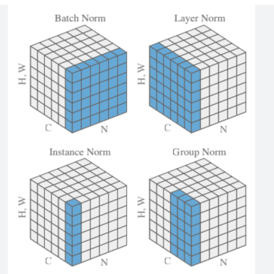
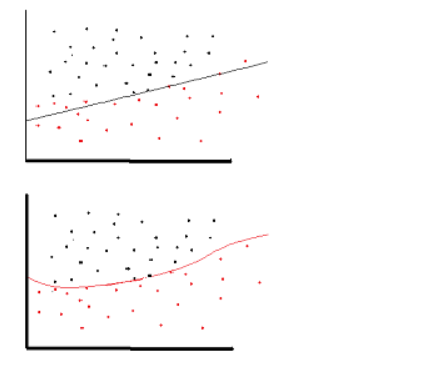
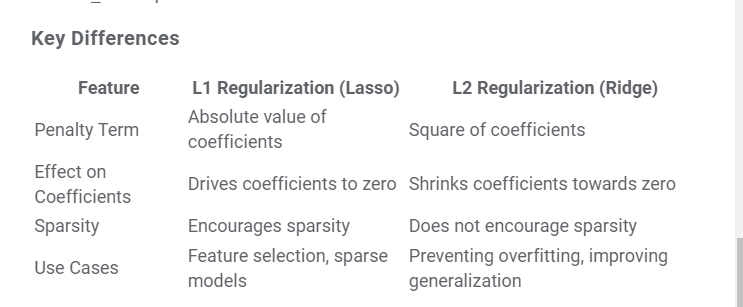

Daily Scribble: #
Scribbling the content seen in the day:
January: #
- vLLM: Easy, fast, and cheap LLM serving for everyone
- https://github.com/vllm-project/vllm
- Invented the concept of “PagedAttention”
- uses xFormer internally, so indirectly uses FlashAttention and FlashAttention2 as well
- Has support for continuous batching (very useful for transformer/decoder architecture)
- When released, claims to be much much faster than huggingface TGI. Now, even HF uses paged-attention for inference
- Fooocus:
- Fooocus is an image generating software. Fooocus is a rethinking of Stable Diffusion and Midjourney’s designs.
- Made by the controlnet authors
- Has direct support for colab and huggingface. Made on gradio
- Looks quite good and easy to use:
- On early analysis, it looks like: it can do inpainting/outpainting and image-super-resolution as well.
- torchserve:
- Started with g4dn.xlarge instance type and model: ViT L16. Later updgraded to G4Dn.2xlarge to check the effect of increasing the CPU number and CPU memory.
- Played a lot of dynamic batching and worker count on single GPU. Came to 2 conclusion:
- Dynamic batching helps (see below)
- On dynamic batching, once GPU utlization becomes 100%, no one can help later
- Conclusion: Once gpu memory utilization is full, whatever we do, it wont increasing the actual load.
- Importance of AWS elastic inference (GPU as a service): Even though this ViT L16 is a medium level model with I believe update 300M params, 1 model only uses around 20 to 30% of the memory. With dynamic batching, the utilization is 100% even with 1 worker, so we are effectively not using memory at the fullest.
- Played a lot of dynamic batching and worker count on single GPU. Came to 2 conclusion:
- Does Dynamic batching helps ? On g4dn:
- Yes. When it was set to 1, the max RPS was 21
- When batch-size was 1 but workers was also 1, the gpu utilization was around 85%
- When workers were increased to 4 and batch-size was still 1, the gpu utilization became 100, but that did not affect the RPS.
- In both cases, the response time was slightly faster than dynamic batching.
- When it was set to 32, the max RPS was 32
- when dynamic batching is on, whatever is the worker count, it does no affect the RPS (for this model)
- Yes. When it was set to 1, the max RPS was 21
- Started with g4dn.xlarge instance type and model: ViT L16. Later updgraded to G4Dn.2xlarge to check the effect of increasing the CPU number and CPU memory.
February: #
- LLM Instruction Finetuning:
- In general, it will have three things:
- Task: The task which LLM needs to perform
- Context: Based on which an answer will be generated by the LLM for the above task
- Reponse: The response generated by the LLM
- How does Encoding look for 1 instructin:
- Lets say the LLM is trained on 1024 tokens, then for a given instruction:
- Lets suppose the task + context == 256 tokens
- Lets say the response is of 256 tokens,
- Then the instruction will be padded with 512 tokens » This will make the request to 1024 tokens in total
- Lets say the LLM is trained on 1024 tokens, then for a given instruction:
- How does the label look for above corresponding instruction:
- One important thing to note in instruction finetuning is that:
- The gradients for Task and Context tokens should not be taken into consideration while performing backpropogation
- Important Side NOTE: During normal supevised finetuning of LLM’s on domain specific data for next-word prediction, we do not do this stuff.
- For skipping the Task+Context tokens, we will add “-100” for the first 256 tokens (from the above example). In Pytorch, for Cross-entropy loss, -100 is a constant number used, if we want to skip some region of input from contributing towards the gradient-decent process.
- The gradients for Task and Context tokens should not be taken into consideration while performing backpropogation
- One important thing to note in instruction finetuning is that:
- How does the attention mask is calcuated:
- From the above example of 1023 tokens: For the first 512 tokens, the attention mask should be 1. For the remaining 512 tokens the attention mask should have a value of 0.
- This means, we are telling the attention mask to not attend the EOS padded tokens.
- In general, it will have three things:
- SHAP values:
- For a given record, we have following values: y_pred, y_test, x_pred –> if shape_val was the shap_values for the given x_pred and exp_val was the expected valulue for the entire set (which is nothing but the average of the y_pred)
- Then, y_pred == sum(shap_value) + exp_val
- The feature shap value is 0 if feature value is missing or null.
- While using XGBoost, if we are using the native library (Not the one integrated with SKlearn), we can get shap values directly from the predicted value.
- (with the help of Google Gemini) How are shap values computed ? (NOTE: Very high level explanation)
- First compute the baseline prediction value »> which is nothing but the expected value for all the predictions (average of entire y_pred)
- Compute Marginal Contributions and Average:
- Suppose we had 4 features, and we have started with calculation of shap value for feature1:
- then compute all possible combination of feature 1 with other features
- like: (feature1), (feature1, feature2), (feature1, feature3), (feature1,2,3)….. etc etc
- When we just consider feature1, all other values will be NULL or 0 in the input
- Calculate the contribute of every combination for a given feature and average those »> This is the shap value for a given feature1 for a single record.
- Now, perform this for every feature for every record within the dataset.
- Suppose we had 4 features, and we have started with calculation of shap value for feature1:
- For a given record, we have following values: y_pred, y_test, x_pred –> if shape_val was the shap_values for the given x_pred and exp_val was the expected valulue for the entire set (which is nothing but the average of the y_pred)
April: #
-
Layer Norm vs Batch Norm vs Instance Norm vs Group Norm:
- For CV:
- 
- For NLP:
- Layer Norm for NLP (Transformers) looks exactly like Instance Norm of CV

- For CV:
-
Residual Connection/Skip Connection:
- In skip connection, since we are adding the intial output to some further layer output, we should take care to keep the h * w * c same.
October: #
-
Why do we need non-linearity in NN ?
- Non-linearity is needed in activation functions because its aim in a neural network is to produce a nonlinear decision boundary via non-linear combinations of the weight and inputs.
- non-linear means that the output cannot be reproduced from a linear combination of the inputs (which is not the same as output that renders to a straight line–the word for this is affine).
- Stackoverflow Link
- 
-
L1 and L2 Regularization:
- Helps in model generalization
- L1 –> Lasso –> Loss = loss_fcn + gamma * (|wt1| + |wt2| + …) –> Makes weights of less important feature as 0, hence useful for feature selection –> Geometry is square
- L2 –> Ridge –> Loss = loss_fcn + gamma * sqrt(|wt1|**2 + |wt2|**2 + …) –> shrinks wts towards 0 but not full 0 –> Geometry is circle
- 